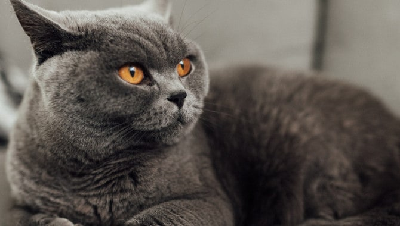
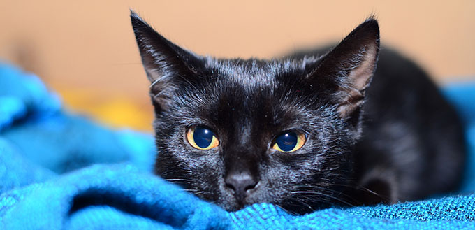
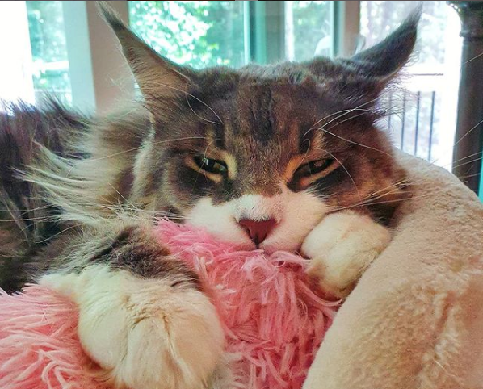
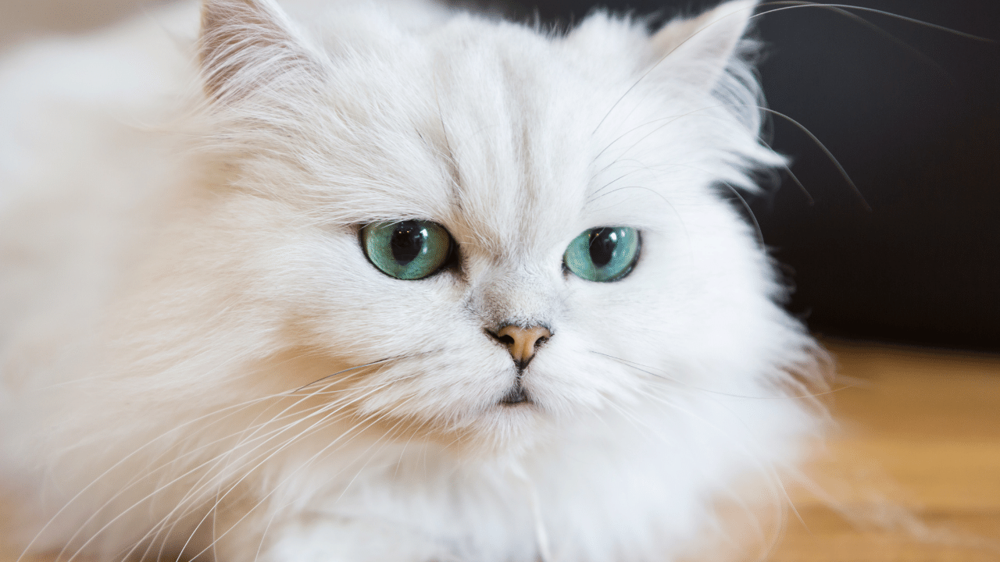
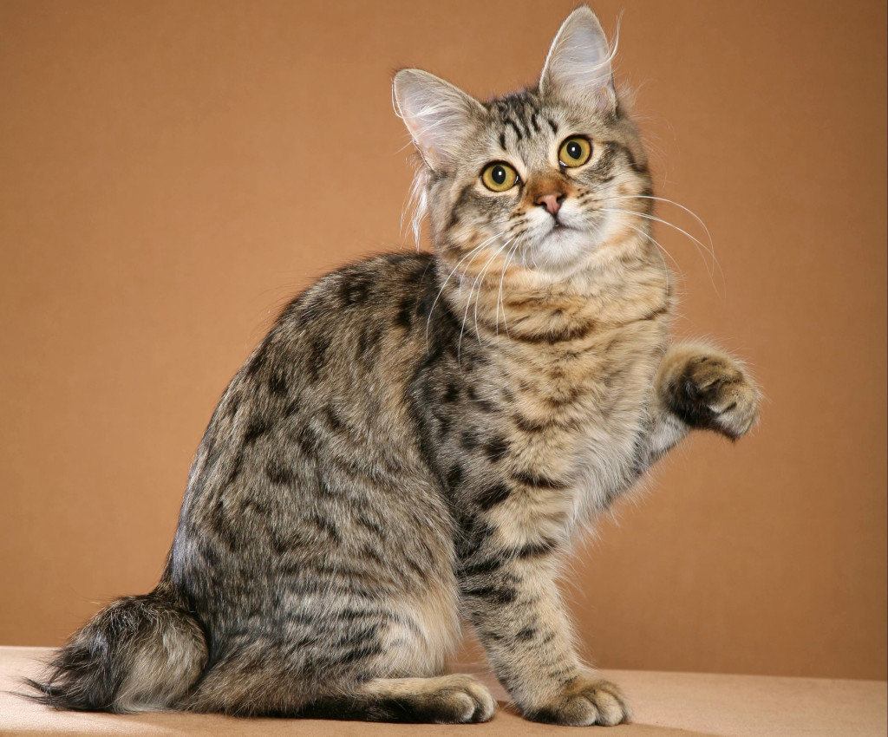
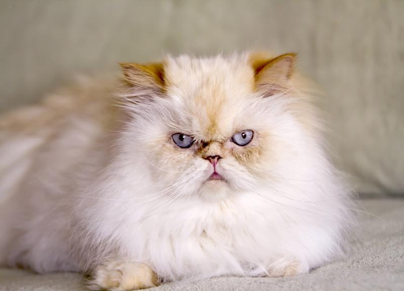
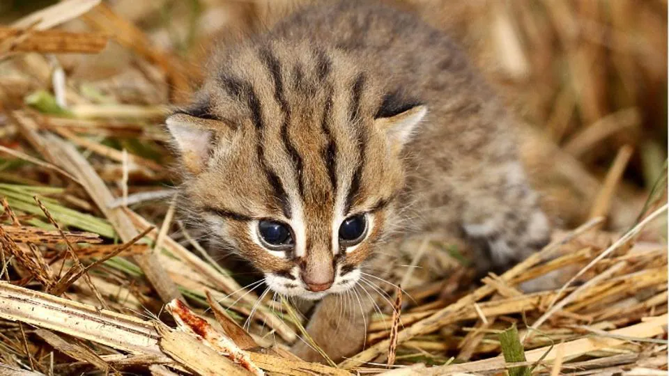
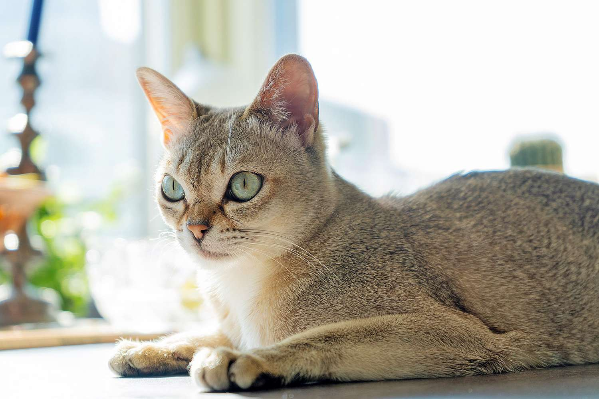
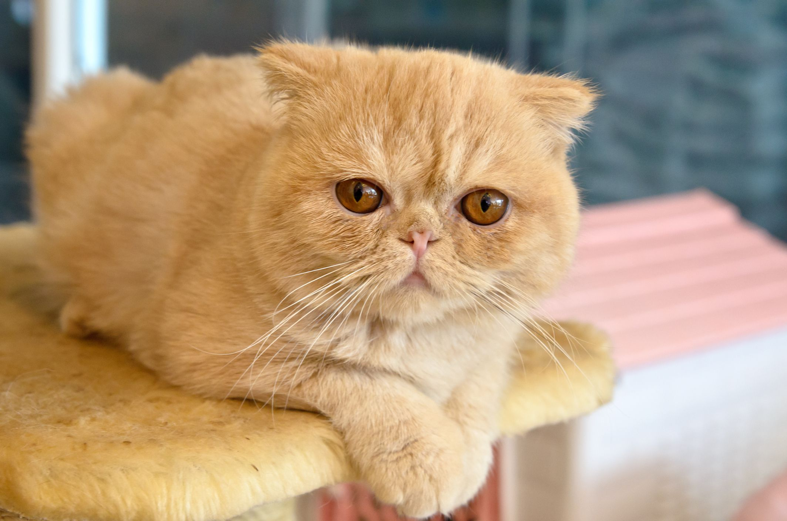

1.British short hair cat
This cat is a variation of the Persian breed and is often more popular due to the nature of its coat.They also have a Persian cat face which makes them more beautiful and best
cat breeds in India like Persian cats.
2.Bombay Cat
These incredible fellas remind us of the black panther.It is a friendly cat that loves to play and learn tricks.A healthy Bombay can live around 15 to 20 years.
3.Maine Coon Cat
Maine Coons have several physical adaptations for survival in harsh winter climates. They are known to be the oldest cat breeds in history on earth and are also considered one of the most suitable breeds
to adopt.
4.Persian cat
This breed is most commonly spotted in Hollywood films remember Snowbell? and can catch anyone’s attention with their looks. A long white mane and deep set twinkling eyes.
5.The American Bobtail
The most adorable part about The American Bobtail Cats is its tail. It has a muscular body type, shiny coat and fluffy long hair. They have a sturdy body type and have shiny coats with long hair. American
Bobtails are a very sturdy breed, with both short- and long-haired coats.
6.Himalayan Cat
Long fluffy coat that requires daily brushing and beautiful blue eyes define this cat’s look. They have fluffy hair and beautiful blue eyes. This breed isn’t very active or athletic and
loves to lounge on its owner’s lap.
7.Spotted Cat
f you consider yourself a true animal lover, then adopting this breed would be a noble deed. The quintessential Indian Billi is the most common breed found in India and adjusts well to the
Indian climatic conditions.
8.Singapura cat
Here comes my favorite and the best cat breeds in India, the Singapura cat. The weight of this cat is around 8 pounds and it stays like this for its whole life. During this period, breeders
found that the occasional litter would have a solid colored kitten, caused by the recessive gene for solid color.
9.Exotic short hair
This cat is a variation of the Persian breed and is often more popular due to the nature of its coat. They also have a Persian cat face which makes them more beautiful and best cat breeds
in India like Persian cats.